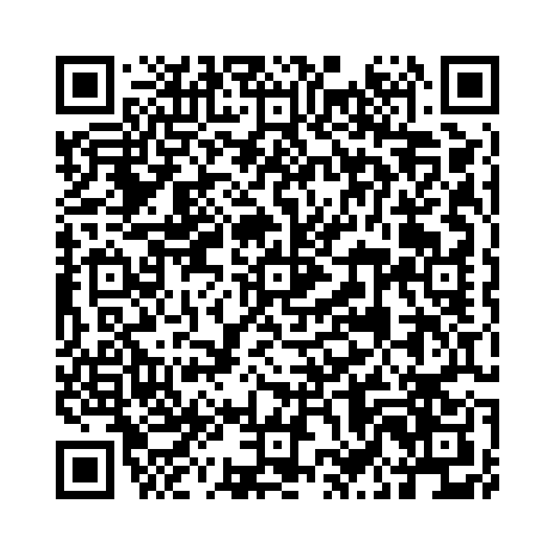

命令文 は、相手に何かを命じたり、指示を与えるときに使います。 主語は省略され、動詞の原形で始まります。 否定形は "Don't" を動詞の前に置きます。
例:
以下の単語を並び替えて正しい命令文を作成しましょう。（和訳を参考にしてください）

問題1: (door / the / open) - ドアを開けてください。
解答: Open the door.
解説: 命令文は動詞の原形から始まります。
問題2: (me / help / please) - 私を助けてください。
解答: Please help me.
解説: 「Please」をつけることで丁寧な命令文になります。
問題3: (late / don't / be) - 遅刻しないでください。
解答: Don't be late.
解説: 否定の命令文では「Don't」を動詞の前に置きます。
問題4: (careful / be) - 気をつけてください。
解答: Be careful.
解説: 「Be」は形容詞を伴う命令文でよく使われます。
問題5: (me / salt / pass / the) - 塩を取ってください。
解答: Pass me the salt.
解説: 命令文は動詞の原形から始まり、目的語が続きます。